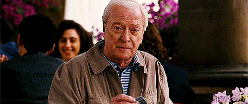

DAD JOKES
and
CODAD COJOKES
@bodil
hello
WHITHER SCALA
a visionary journey of thought leadership by
@bodil
This is fine.
SOON.
THE SCALA TOOLING STORY
a dystopian lament by
@bodil
WTF IS WRONG WITH YOU
a heartwarming tale of community by
@bodil
COSTATE COMONAD COALGEBRAS FOR THE COWORKING MPUTER COSCIENTIST
a simple introduction by
@bodil
WHAT IS THE DUAL OF AN ALA?
JON PRETTY IS THE ZODIAC KILLER
a true story by
@bodil
WHENCE SCALA
a historical deep dive by
@bodil
Team GJ
"Show Me The Meaning Of Cofree Comonads"
(Sun Records, 1998)
Philip Wadler, early attempt to explain monads, 1997
"Pizza" was a superset of Java with parametric polymorphism, higher order functions and algebraic data types.
"Pizza" was our first solid evidence that the name of a language directly impacts its chance of survival.
Jonathan Pretty, BBC for Schools and Colleges, 1974
GJ++
Scala (Slowly Compiled Academic LAnguage) went on to a series of extraordinary achievements.
In 2008, it was discovered that Scala's type system was the second type system in history to become accidentally Turing complete.
By 2015, scalac had mined enough Bitcoin to keep Typesafe funded through the year 2100.
By 2016, Typesafe had become so successful in the enterprise that it had to be renamed to something less meaningful.


GOING DOTTY
a comedy of enterprise politics by
@bodil
Python 3.0 was released
on 3 December, 2008.
8 years ago.
Who are you eating, Jon?
Prepare for thought leadership.
YOU'RE WELCOME.
GET HOME SAFELY.